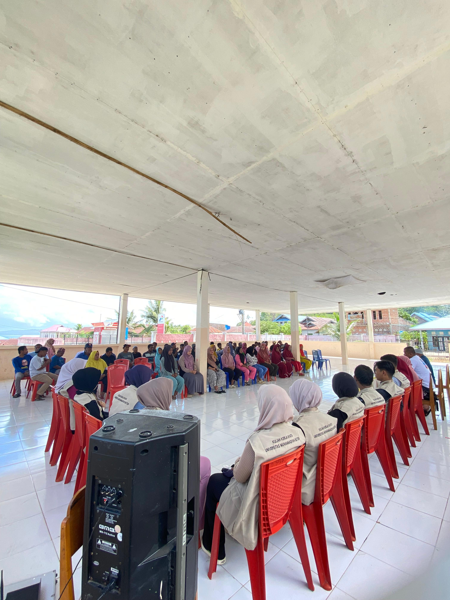
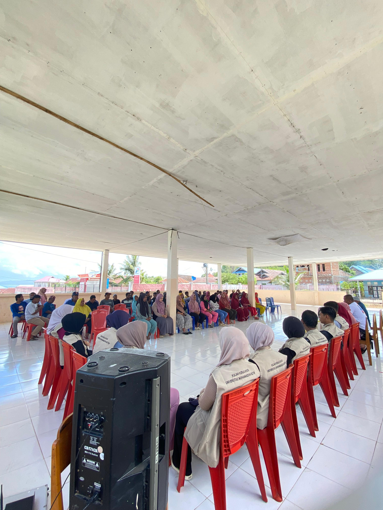

Desa Boneatiro Barat
Kec. Kapuntori, Kab. Buton
Kec. Kapuntori, Kab. Buton
Desa dengan keindahan alam dan budaya di Kecamatan Kapuntori, Kabupaten Buton
Jelajahi Desa KamiDesa Boneatiro Barat terletak di Kecamatan Kapuntori, Kabupaten Buton. Desa ini dikenal dengan Wisata Lumba-Lumba serta potensi wisata yang luar biasa.
Warga desa hidup dengan rukun, mengandalkan pertanian, perikanan, dan sektor pariwisata.
Moto: "Alam Lestari, Desa Berseri"
Visi: Mewujudkan Desa Boneatiro Barat yang maju, mandiri, dan sejahtera.
Misi:
Desa Boneatiro Barat adalah desa pemekaran dari Desa Boneatiro pada tahun 2010. Nama "Boneatiro" berasal dari bahasa Wolio, yaitu "Bone" (pasir) dan "iy ntiro" (yang ditatap), sehingga berarti hamparan pasir yang dilihat dari kejauhan. Sesuai namanya, Boneatiro Barat adalah desa pesisir di Pulau Buton yang menghadap ke Selat Buton. Boneatiro dikenal dalam sejarah Kesultanan Buton sebagai lokasi terbunuhnya panglima perang Tobelo, La Bolontio, yang diyakini dimakamkan di Boneatiro Barat. Penduduk asli desa ini berasal dari Kolowa (Kec. Gu) yang berimigrasi sejak tahun 1927 karena ketidaksetujuan terhadap kebijakan pemerintah setempat saat itu. Setelah hidup berpindah-pindah, pada tahun 1961, tempat yang mereka tempati di pesisir Pulau Buton resmi menjadi Desa Boneatiro dengan kepala desa pertama La Heri. Pada tahun 2010, Desa Boneatiro dimekarkan menjadi dua, yaitu Desa Boneatiro dan Desa Boneatiro Barat. Kepala desa pertama (pelaksana) Boneatiro Barat adalah H. Bolo Karim.
Struktur organisasi Desa Boneatiro Barat terdiri dari Kepala Desa, perangkat desa, serta lembaga-lembaga masyarakat yang bekerja sama untuk pembangunan desa.

Lumba-lumba dikenal sebagai mamalia laut yang cerdas dan lincah, dengan atraksi meloncat dan berenang yang akan menjadi pemandangan tak terlupakan.
Di Boneatiro Barat terdapat tebing tinggi dengan ketinggian sekitar 400 meter yang menghadap ke laut. Tempat ini ideal untuk menikmati pemandangan laut yang luas atau "saujana" (sejauh mata memandang). Pemandangan dari puncak tebing ini pasti menawarkan panorama perpaduan hutan dan laut yang menakjubkan.

Lupakan sejenak keramaian. Sambutlah Pulau Pendek, permata tersembunyi di Kabupaten Buton, Sulawesi Tenggara, yang menawarkan harmoni sempurna antara keajaiban laut dan misteri daratan. Ini adalah destinasi eksklusif yang memanggil jiwa petualang dan pecinta kedamaian.


 

Alamat: Desa Boneatiro Barat, Kec. Kapuntori, Kab. Buton, Sulawesi Tenggara
Telepon: +62 812 3456 7890
Email: Boneatiro Barat.desa@gmail.com
Jam Kerja: Senin - Jumat, 08.00 - 16.00 WITA